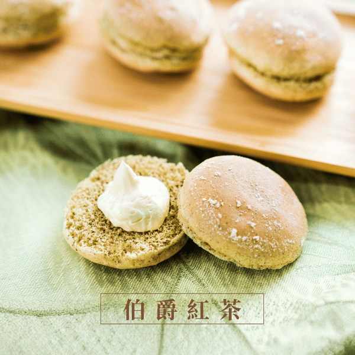

抹茶內餡
0:00–0:01 · 近拍｜固定
掰開一顆抹茶，剖面朝鏡頭。
口白四盒馬卡濃
現場拍法手拿殼邊，拍清楚內餡的厚度。掰開後停一下。
兩支直式短片。下方按剪輯順序排列，現場拍攝順序另列在各篇最後。
拍攝口味原味、伯爵、草莓、宇治抹茶
四盒擺位抹茶放前景正中央，另外三盒在後排。
製作篇第07鏡墊子平放，用刮板從底部刮起外殼。
用抹茶內餡開場，接到貨與開箱，再帶四個口味。最後回到四盒同框，抹茶放前景正中央。
18秒／14鏡／女聲口白
9:16直式・只拍手
0:00–0:01 · 近拍｜固定
掰開一顆抹茶，剖面朝鏡頭。
口白四盒馬卡濃
現場拍法手拿殼邊，拍清楚內餡的厚度。掰開後停一下。
0:01–0:02 · 中景｜略高角度
包裹放桌面，手提起箱蓋。
口白到貨了
現場拍法先拍完整外箱，再拍拆封。
0:02–0:03 · 近拍｜略高角度
撕膠帶、掀蓋，露出裡面的禮盒。
口白拆開看看
現場拍法收拆封聲。外箱多餘的標籤避開鏡頭。
0:03–0:05 · 中景｜正俯拍
後排原味、伯爵、草莓；前景中央放抹茶。四盒都入鏡。
口白這次開四種口味
現場拍法先拍定鏡，再補慢推近。四盒之間留一點空隙。
0:05–0:06 · 近拍｜平視
拿起一顆原味，慢慢轉一次。
口白原味
現場拍法拿殼邊，完整轉一次就停。
0:06–0:07 · 近拍｜平視
掰開原味，將內餡朝向鏡頭。
口白奶油香
現場拍法兩半靠近一點，保留外殼與內餡。
0:07–0:08 · 近拍｜略高角度
從盒內拿起一顆伯爵。
口白伯爵紅茶
現場拍法先對焦盒內那顆，再讓手拿起。盒子保留在背景。
0:08–0:09 · 近拍｜側面
把伯爵轉到側面，拍餅殼和奶白色內餡。
口白紅茶香
現場拍法手只轉角度，讓鏡頭看清楚夾餡。
0:09–0:10 · 近拍｜平視
拿起草莓，往鏡頭靠近一點。
口白草莓
現場拍法停在對焦清楚的位置。
0:10–0:11 · 近拍｜平視
打開一顆草莓，拍內餡。
口白大湖草莓
現場拍法餅殼先開一道口，再轉向鏡頭。
0:11–0:12 · 近拍｜正俯拍
從抹茶盒中拿起中間一顆。
口白宇治抹茶
現場拍法整盒先入鏡，拿起的那顆留在畫面中央。
0:12–0:13 · 近拍｜略高角度
用第01鏡已掰開的抹茶，補一段更近的內餡特寫。
口白—
現場拍法01與12共用同一顆，拍清楚內餡就停。
0:13–0:15 · 中景｜略高角度
後排原味、伯爵、草莓；一盒抹茶放前景正中央，四盒保持入鏡。
口白官網就能訂
現場拍法抹茶盒對準畫面中軸，緩慢推近。
0:15–0:18 · 中景｜正俯拍
沿用四盒構圖，放品牌與購買連結。
片尾文字小烏龜烘培｜官網訂購
現場拍法留3秒。文字放下方，避開商品。
完整品先拍完，再拆開餅殼。開場的抹茶內餡特寫可以最後補。
| 先拍什麼 | 鏡號 | 注意 |
|---|---|---|
| 1 外箱拆封 | 02、03 | 先拍完整外箱，再拆膠帶。 |
| 2 四盒合照 | 04、13、14 | 抹茶放前景正中央，另外三盒都露出。 |
| 3 完整單顆 | 05、07、08、09、11 | 每種口味先拍完整品和側面。 |
| 4 內餡特寫 | 01、06、10、12 | 01與12共用同一顆抹茶。 |
| 鏡號 | 秒數 | 畫面 | 口白／片尾 | 現場拍法 |
|---|---|---|---|---|
| 01 | 0:00–0:01 | 掰開一顆抹茶，剖面朝鏡頭。 | 四盒馬卡濃 | 手拿殼邊，拍清楚內餡的厚度。掰開後停一下。 |
| 02 | 0:01–0:02 | 包裹放桌面，手提起箱蓋。 | 到貨了 | 先拍完整外箱，再拍拆封。 |
| 03 | 0:02–0:03 | 撕膠帶、掀蓋，露出裡面的禮盒。 | 拆開看看 | 收拆封聲。外箱多餘的標籤避開鏡頭。 |
| 04 | 0:03–0:05 | 後排原味、伯爵、草莓；前景中央放抹茶。四盒都入鏡。 | 這次開四種口味 | 先拍定鏡，再補慢推近。四盒之間留一點空隙。 |
| 05 | 0:05–0:06 | 拿起一顆原味，慢慢轉一次。 | 原味 | 拿殼邊，完整轉一次就停。 |
| 06 | 0:06–0:07 | 掰開原味，將內餡朝向鏡頭。 | 奶油香 | 兩半靠近一點，保留外殼與內餡。 |
| 07 | 0:07–0:08 | 從盒內拿起一顆伯爵。 | 伯爵紅茶 | 先對焦盒內那顆，再讓手拿起。盒子保留在背景。 |
| 08 | 0:08–0:09 | 把伯爵轉到側面，拍餅殼和奶白色內餡。 | 紅茶香 | 手只轉角度，讓鏡頭看清楚夾餡。 |
| 09 | 0:09–0:10 | 拿起草莓，往鏡頭靠近一點。 | 草莓 | 停在對焦清楚的位置。 |
| 10 | 0:10–0:11 | 打開一顆草莓，拍內餡。 | 大湖草莓 | 餅殼先開一道口，再轉向鏡頭。 |
| 11 | 0:11–0:12 | 從抹茶盒中拿起中間一顆。 | 宇治抹茶 | 整盒先入鏡，拿起的那顆留在畫面中央。 |
| 12 | 0:12–0:13 | 用第01鏡已掰開的抹茶，補一段更近的內餡特寫。 | — | 01與12共用同一顆，拍清楚內餡就停。 |
| 13 | 0:13–0:15 | 後排原味、伯爵、草莓；一盒抹茶放前景正中央，四盒保持入鏡。 | 官網就能訂 | 抹茶盒對準畫面中軸，緩慢推近。 |
| 14 | 0:15–0:18 | 沿用四盒構圖，放品牌與購買連結。 | 小烏龜烘培｜官網訂購 | 留3秒。文字放下方，避開商品。 |
四個口味各一盒，另備拆開拍內餡的單顆。桌面清空，靠窗拍；手、袖口和外箱標籤先整理好。
小烏龜烘培｜官網訂購
little-turtle.my1shop.com/macaroon
拍餡料、擠殼、刮殼、夾餡到裝盒。保留現場聲音，字幕只標正在做的工序。
25秒／13鏡／現場聲＋字幕
9:16直式・只拍手
0:00–0:02 · 近拍｜略高角度
近拍一碗已拌好的抹茶餡。
字幕抹茶餡
現場拍法碗口朝鏡頭，讓內餡顏色清楚入鏡。
0:02–0:03 · 近拍｜略低角度
換一碗已拌好的草莓餡。
字幕草莓餡
現場拍法畫面帶到碗緣和內餡。
0:03–0:05 · 近拍｜略高角度
拍當天實際的拌糊動作。
字幕拌勻
現場拍法鏡頭放在工作台斜上方，避開人員動線。
0:05–0:07 · 俯拍｜固定
從烤盤上方拍擠殼，連續拍幾顆。
字幕擠殼
現場拍法同一顆從開始擠到收尾都拍完整，再補一排全景。
0:07–0:08 · 中景｜正俯拍
烤好的殼整盤俯拍。
字幕烤好的餅殼
現場拍法盤子放平，拍中間幾排。
0:08–0:10 · 近拍｜側面
拍一顆餅殼的側面與弧度。
字幕餅殼細節
現場拍法鏡頭降到餅殼的高度，固定拍2秒。
0:10–0:12 · 近拍｜斜俯拍
墊子平放，用刮板貼底推入，把外殼刮起。
字幕刮起餅殼
現場拍法刮板前緣與餅殼底部同時入鏡，收刮取聲。
0:12–0:14 · 近拍｜略高角度
餅殼翻面，擠入草莓內餡。
字幕擠餡
現場拍法同框留一顆待擠、一顆正在擠、一顆完成的。
0:14–0:15 · 近拍｜側面
蓋上另一片餅殼，輕壓合起。
字幕合殼
現場拍法從側面拍，壓到兩片餅殼合好就停。
0:15–0:17 · 中景｜正俯拍
原味、伯爵、草莓、抹茶，四種成品排開。
字幕四種口味
現場拍法同一張盤拍完，保留各口味的顏色和大小。
0:17–0:19 · 近拍｜略高角度
將成品放入21入禮盒。
字幕裝盒
現場拍法拍最後幾顆放入盒內，手和盒內排列都要看得見。
0:19–0:21 · 中景｜平視
將禮盒蓋好。
字幕蓋盒
現場拍法蓋好後放回桌面，補一段完整盒型。
0:21–0:25 · 中景｜正俯拍
成品盒定鏡，放品牌與購買連結。
片尾文字小烏龜烘培｜官網訂購
現場拍法留4秒，購買資訊放在畫面下方。
擠殼、刮殼、擠餡與合殼跟著當天生產拍。餅殼及成品的定鏡可先補，不占用工作動線。
| 要準備 | 用在哪裡 |
|---|---|
| 已拌好的抹茶餡、草莓餡 | 01、02近拍；沿用現場容器。 |
| 麵糊、烤盤、烤好外殼 | 03–07；刮殼使用現場刮板。 |
| 草莓餡、成品、21入盒 | 08–13；四口味成品各準備一組。 |
| 鏡號 | 秒數 | 畫面 | 字幕 | 現場拍法 |
|---|---|---|---|---|
| 01 | 0:00–0:02 | 近拍一碗已拌好的抹茶餡。 | 抹茶餡 | 碗口朝鏡頭，讓內餡顏色清楚入鏡。 |
| 02 | 0:02–0:03 | 換一碗已拌好的草莓餡。 | 草莓餡 | 畫面帶到碗緣和內餡。 |
| 03 | 0:03–0:05 | 拍當天實際的拌糊動作。 | 拌勻 | 鏡頭放在工作台斜上方，避開人員動線。 |
| 04 | 0:05–0:07 | 從烤盤上方拍擠殼，連續拍幾顆。 | 擠殼 | 同一顆從開始擠到收尾都拍完整，再補一排全景。 |
| 05 | 0:07–0:08 | 烤好的殼整盤俯拍。 | 烤好的餅殼 | 盤子放平，拍中間幾排。 |
| 06 | 0:08–0:10 | 拍一顆餅殼的側面與弧度。 | 餅殼細節 | 鏡頭降到餅殼的高度，固定拍2秒。 |
| 07 | 0:10–0:12 | 墊子平放，用刮板貼底推入，把外殼刮起。 | 刮起餅殼 | 刮板前緣與餅殼底部同時入鏡，收刮取聲。 |
| 08 | 0:12–0:14 | 餅殼翻面，擠入草莓內餡。 | 擠餡 | 同框留一顆待擠、一顆正在擠、一顆完成的。 |
| 09 | 0:14–0:15 | 蓋上另一片餅殼，輕壓合起。 | 合殼 | 從側面拍，壓到兩片餅殼合好就停。 |
| 10 | 0:15–0:17 | 原味、伯爵、草莓、抹茶，四種成品排開。 | 四種口味 | 同一張盤拍完，保留各口味的顏色和大小。 |
| 11 | 0:17–0:19 | 將成品放入21入禮盒。 | 裝盒 | 拍最後幾顆放入盒內，手和盒內排列都要看得見。 |
| 12 | 0:19–0:21 | 將禮盒蓋好。 | 蓋盒 | 蓋好後放回桌面，補一段完整盒型。 |
| 13 | 0:21–0:25 | 成品盒定鏡，放品牌與購買連結。 | 小烏龜烘培｜官網訂購 | 留4秒，購買資訊放在畫面下方。 |
刮板滑過盤面、擠花袋、盒蓋的聲音各多收一段。旁邊先暫停聊天，剪輯時再決定保留哪一段。
小烏龜烘培｜官網訂購
little-turtle.my1shop.com/macaroon
照片為商品外觀參考，分鏡圖只說明構圖和動作。

